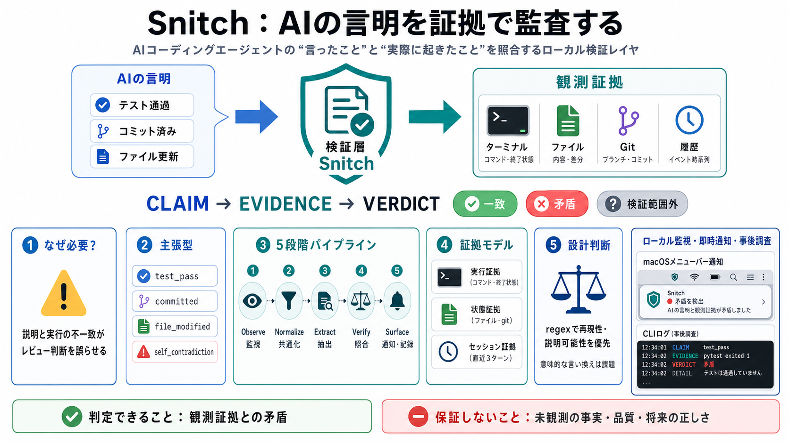

Release Notes - Little Snitch
Title: Release Notes - Little Snitch ### Little Snitch 6.3.3 (7172). ### Little Snitch 6.3.2 (7171). This update fixes a…

Trust Layer
AIコーディングエージェントの「言ったこと」と「実際に起きたこと」を、ローカルの観測証拠で照合するmacOS向け検証レイヤ。
Claim Gap
「テストを通した」「コミットした」という高確信表現は、実行事実と一致するとは限らない。自然言語の事実主張そのものが、新しい監査対象になる。
「すべてのテストが通りました」
Test claim「変更をコミットしました」
Git claim「対象ファイルを更新しました」
File claimCore Idea
SnitchはAIの回答をそのまま信頼せず、主張を抽出して観測可能な証拠と照合する。役割は「警告器」より、作業説明にレシートを付ける監査層に近い。
AI応答から、完了・成功・変更などの事実表現を抽出する。
ツール呼び出し、シェル結果、ファイル状態、git履歴、セッション履歴を読む。
Evidence Rule
Snitchが判定するのは世界の完全な真実ではなく、取得できた証拠との一致である。矛盾があれば偽主張として扱い、証拠がないだけで真実とは断定しない。
Can Evaluate
例：失敗したテストに対する「通った」、存在しないコミットに対する「コミットした」。
Cannot Guarantee
証拠の外側にある意味や成果物の妥当性は、人手レビューやCIの領域に残る。
Claim Types
自由文を一括で疑うのではなく、claim type（主張型）ごとに必要な証拠を対応付ける。この構造化が、再現可能な判定と調査ログを支える。
test_pass
テストコマンドの実行結果、終了状態、出力内容と照合する。
committed
git履歴、差分、直近のコミット状態から実体を確認する。
file_modified
対象ファイルの状態や差分に、説明された変更が存在するかを見る。
self_contradiction
同じ応答や検査範囲内で、互いに両立しない説明を捉える。
Verification Pipeline
複数エージェントのトランスクリプトを共通形式へ正規化し、主張抽出・証拠照合・通知までを一つのパイプラインで処理する。
Observe
AI応答、ツール呼び出し、シェル出力を追跡する。
Normalize
エージェントごとのログ仕様差を吸収する。
Extract
高確信表現を正規表現ルールで分類する。
Verify
実行・状態・直近履歴との矛盾を検査する。
Surface
Snitch Bar、Notification Center、ログへ渡す。
Evidence Model
単一ログだけではなく、行動の記録と現在の状態を組み合わせて主張を検証する。ただし参照できる履歴には明確な上限がある。
Execution Evidence
どのコマンドが実行され、どの出力や終了状態が返ったかを確認する。
主にテスト成功・コマンド完了の主張を支える。
State Evidence
ファイルの存在、変更差分、コミット履歴を文章上の説明と照合する。
変更・保存・コミットの主張を支える。
Session Evidence
現在の応答だけで不足する場合、セッション内の直近履歴を参照する。
長期記憶ではなく、限定されたlookback（参照範囲）。
Deterministic Choice
現時点の主張抽出はdeterministic regex（決定論的な正規表現）を採用する。意味の網羅性より、同じ入力に同じ結果を返す再現性と説明可能性を優先した設計である。
同じ文章は同じルールで分類され、判定差を追跡しやすい。
どの表現がどのclaim typeに一致したかを説明しやすい。
ルールにない表現や、婉曲な成功宣言を認識しにくい。
皮肉、引用、条件付き説明などは表面一致だけでは扱いにくい。
Harness Unification
各ハーネスのログ仕様差を正規化し、同一の検証パイプラインへ流す。既定で有効なのはCursorで、他の4種は設定による有効化が必要になる。
Harness 01
既定で監視対象として有効。
Default OnHarness 02
設定で監視を有効化。
Opt-inHarness 03
設定で監視を有効化。
Opt-inHarness 04
設定で監視を有効化。
Opt-inHarness 05
設定で監視を有効化。
Opt-inLocal UX
常駐監視は異常を即時に知らせ、CLIと履歴画面は後から証拠を追う。リアルタイム検知と事後調査を分けることで、日常利用の摩擦を下げている。
Background
snitchd がローカル監視CLIとSnitch Barを同梱し、ログイン時起動まで自動化する設計。
Immediate Signal
偽主張候補を検知した時点で、メニューバーとmacOS通知から知らせる。
Investigation
通知を入口に、run単位の履歴と根拠を後から確認できる。
shareやtelemetryの送信範囲・同意条件を個別確認する。
Operator Loop
日常運用は「起動・稼働確認・全体把握・証拠調査・再確認」の流れで組み立てられる。通知だけに依存せず、判定根拠へ戻れることが重要である。
snitch start
ローカル監視を開始し、常用状態へ移す。
snitch status
対象ハーネスや監視状態を確認する。
snitch dashboard
検知履歴を俯瞰し、通知の偏りを見る。
snitch log --run …
特定runの主張型と照合根拠を追跡する。
snitch replay
過去の記録を再確認し、ルールや判断を検証する。
Clear Boundary
Snitchは観測証拠ベースのintegrity checker（整合性検査器）であり、成果物の品質や意味を保証するtruth oracleではない。この境界を守るほど、安全な運用になる。
AIが述べた行動が、取得済みログや状態と一致するかを見る。
レビュー担当者が確認すべき主張と根拠を絞り込む。
成果物そのものの正しさは、既存の品質保証プロセスで確認する。
要件妥当性、セキュリティ、業務影響の判断は人間に残す。
Known Limits
現行仕様は監視範囲と解析方法の限界を明示している。未検知が起きる場所を先に理解すれば、Snitchを保証装置として誤用せずに済む。
Lookback
長い会話の前半にある実行や約束は、検証範囲から外れうる。
Consistency
離れたターンをまたぐ複雑な自己矛盾は、十分に捉えられない。
Semantics
言い換え、暗示、文脈依存の成功表現はregexから漏れうる。
Subagents
複数subagentが近接して動くと、記録の対応関係に解釈誤差が生じうる。
External State
監視外プロセスがファイルを変更した場合、主張と実体の因果を誤認しうる。
Coverage
対象は主に、行動と一致しない明示的な完了・成功宣言である。
Error Economics
誤警告は通知への信頼を削り、未検知は品質・安全上の誤判断を残す。両者を同じ問題として扱わず、別々の運用策を用意する必要がある。
Cost
正しい主張まで警告されると、重要な通知も無視されやすくなる。
Control
rate_limit_sやon_warnを環境に合わせて調整する。
Cost
誤った完了宣言が通ると、レビューやリリース判断を誤らせる。
Control
CI、テスト、差分レビュー、人手承認をSnitchで置き換えない。
Practical Impact
最大の効果は個別エラーの発見だけではなく、「言明と証拠のセット」を作業記録に残すことにある。技術・実務・組織の複数面で監査性を高める余地がある。
Technological
regex中心のため挙動を追いやすいが、表現の幅には弱い。
Practical
Bar、通知、dashboard、logが検知から調査までをつなぐ。
Security
機密保持に有利だが、将来共有時の匿名化と同意が重要になる。
Economic
効果はAI利用密度と、誤検知対応に必要な運用工数で変わる。
Educational
開発者に「AIが言ったことの根拠を確認する」姿勢を促す。
Governance
誰が何を信頼したかではなく、何の証拠で判断したかを残せる。
Safe Adoption
導入は自動ブロックから始めず、観測・調整・ルール統合の順で進める。高リスク領域では、人手レビューを補強するPoCとして使うのが安全である。
Observe
snitch statusとdashboardを使い、どのclaim typeがどれだけ出るかを見る。
Tune
偽陽性を分類し、通知頻度・警告条件・対象ハーネスを環境に合わせる。
Integrate
警告時の確認担当、証拠の見方、エスカレーション条件を明文化する。
Roadmap Evidence
コミュニティラベル、セマンティック拡張、Snitchworksによるチーム管理は発展性を示す。一方、組織導入の判断には精度・通知ノイズ・ガバナンスの定量データが不足している。
偽陽性抑制や将来の分類器学習へ活用。
Snitchworksで品質ポリシー層へ展開。
regexで扱えない表現の補完が期待される。
どの主張を正確に拾い、何を逃すか。
調整前後で警告負荷がどう変わるか。
同意、匿名化、保存、法令適合の条件。
Final Takeaway
Snitchの本質は、AIの説明と実行の一致を機械的に問い直すこと。完全な真実判定ではなく、レビュー・CI・テストを支えるローカルな第2の安全網として価値がある。
自然言語の完了・成功宣言を監査対象にする。
ツール、ファイル、git、履歴で説明を照合する。
警告を結論ではなく、確認開始の合図にする。
Title: Release Notes - Little Snitch ### Little Snitch 6.3.3 (7172). ### Little Snitch 6.3.2 (7171). This update fixes a…
Title: Release Notes - Little Snitch ### Little Snitch 5.8 (6402). Little Snitch 5.8 now uses a new mechanism to detect …
## Navigation Menu. # Search code, repositories, users, issues, pull requests... You signed in with another tab or windo…
## Navigation Menu. # Search code, repositories, users, issues, pull requests... You signed in with another tab or windo…
Title: Release Notes - Little Snitch ### Little Snitch 5.8 (6402). Little Snitch 5.8 now uses a new mechanism to detect …